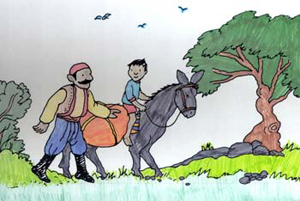

The Gingerbread Man
Once upon a time there was an old woman who loved baking gingerbread.She would bake ginger bread cookies,cakes,houses and gingerbread people, all decorated with chocolate and peppermint,caramel candies and coloured frosting.
she lived with her husband on a farm at the edge of a town. the sweet spicy smell of gingerbread brought children skipping and running to see what would be offered that day.
Unfortunately the children gobbled up the treats so fast that the old woman had a hard time keeping her supply of flour and species to continue making the batches of gingerbread.Sometimes she suspected little hands of having reached through her kitchen window because gingerbread pieces and cookies would disappear.One time a whole gingerbread house vanished mysteriously.She told her husband.Those naughty children are at it again.They don't understand all they have to do is knock on the door and I'll give them my gingerbread treats.
The Man,the Boy and the Donkey
A Man and his son were once going with their Donkey to market. As they were walking along by its side a countryman passed them and said:"you fools,what is a Donkey for but to ride upon?"
So the man put the Boy on the Donkey and they went on their way.But soon they passed a group of men,one of whom said:"see that lazy youngster,he lets his father walk while he rides."
So the man ordered his Boy to get off,and got on himself.But they hadn't gone far when they passed two women,one of whom said to the other:"shame on that lazy lout to let his poor little son trudge along."
Well,the Man didn't know what to do,but at last he took his Boy up before him on the Donkey.By this time they had come to the town,and the passers-by began to jeer and point at them.The Man dtopped and asked what they were scoffing at. The men said:"Aren't you ashamed of ashamed of yourself for overloading that poor donkey of yours and your hulking son?"
"That will teach you,"said an old ,an who had followed them: "please all,and you will please none."